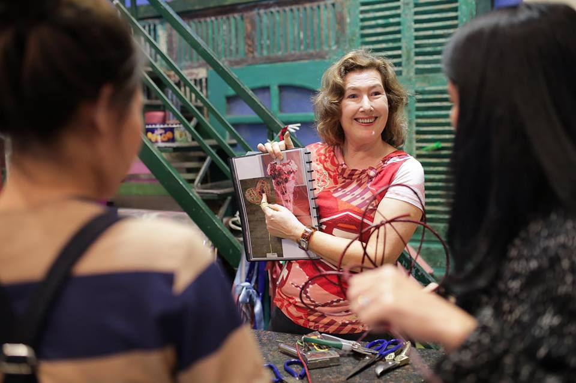

Giới Thiệu
Liti Florist được sáng lập bởi Krystine Nguyễn cùng những người có tình yêu lớn với hoa và mong muốn Liti Florist trở thành bạn đồng hành của mọi người trong mọi sự kiện của cuộc sống.
Được đào tạo tại học viên hoa London - Anh Quốc, Krytine Nguyễn đã đem những kinh nghiệm quý báu, cùng hơi thở của Châu Âu truyền tải trong từng sản phẩm của Liti Florist
Liti Florist không chỉ đơn giản là nơi cung cấp hoa tươi đến khách hàng mà đây còn là nơi gửi gắm tình cảm, tình yêu, đam mê của những người trẻ yêu hoa, thể hiện qua chất lượng sản phẩm, giá trị phục vụ, giá trị tinh thần mà khách hàng nhận được qua từng sản phẩm của Liti.
Đội ngũ Liti Florist luôn nỗ lực hết mình để xây dựng và bảo vệ giá trị cốt lõi của Liti Florist, đó là : sáng tạo; tận tâm; hướng tới hài lòng tuyệt đối của khách hàng.
